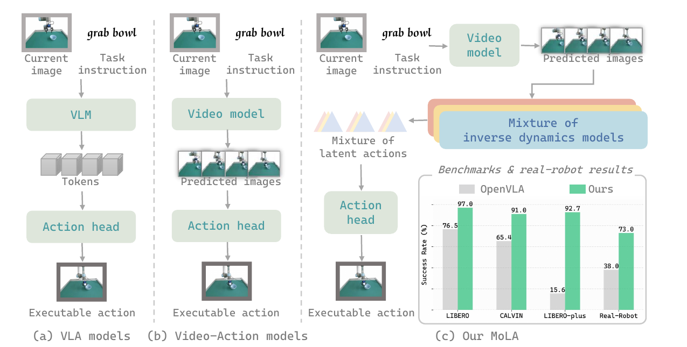
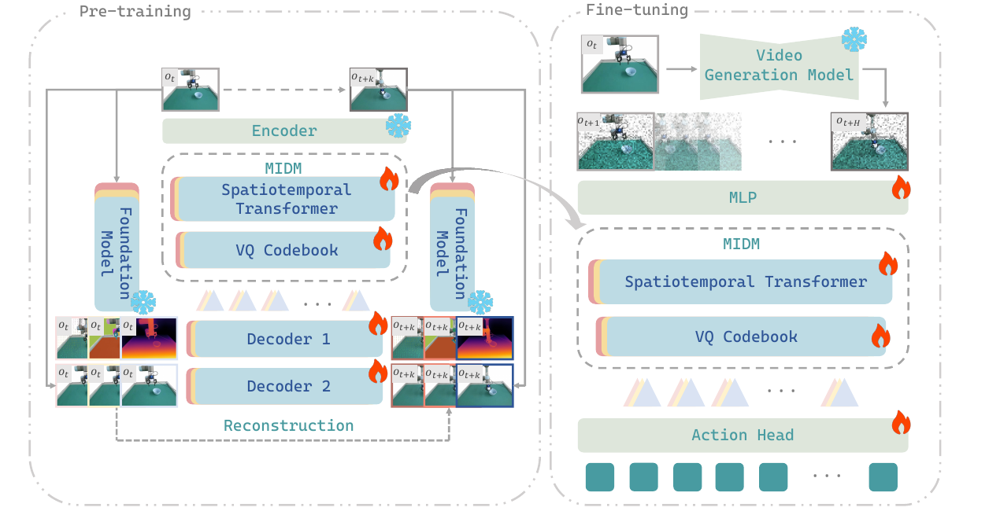

CALVIN
Push the pink block left.
Mixture of Latent Actions for Robot Manipulation
1School of Data Science, Fudan University
2Shanghai Innovation Institute
3Imperial College London
4University of Surrey
* Equal contribution
Video generation models offer a promising imagination mechanism for robot manipulation by predicting long-horizon future observations, but effectively exploiting these imagined futures for action execution remains challenging. Existing approaches either condition policies on predicted frames or directly decode generated videos into actions, both suffering from a mismatch between visual realism and control relevance. As a result, predicted observations emphasize perceptual fidelity rather than action-centric causes of state transitions, leading to indirect and unstable control. To address this gap, we propose MoLA (Mixture of Latent Actions), a control-oriented interface that transforms imagined future videos into executable representations. Instead of passing predicted frames directly to the policy, MoLA leverages a mixture of pretrained inverse dynamics models to infer a mixture of latent actions implied by generated visual transitions. These modality-aware inverse dynamics models capture complementary semantic, depth, and flow cues, providing a structured and physically grounded action representation that bridges video imagination and policy execution. We evaluate our approach on simulated benchmarks (LIBERO, CALVIN, and LIBERO-Plus) and real-world robot manipulation tasks, achieving consistent gains in task success, temporal consistency, and generalization.
MoLA converts predicted visual futures into action-centric representations with a mixture of modality-aware inverse dynamics models, then decodes the inferred latent actions into robot controls.


The videos below are loaded from this repository and cover the real robot setup plus CALVIN, LIBERO, and LIBERO-Plus benchmark examples.
Real-world UR5e manipulation rollout.
Push the pink block left.
Pull the handle to open the drawer.
Put the alphabet soup and cream cheese box in the basket.
Turn on the stove and put the moka pot on it.
Put the black bowl in the bottom drawer and close it.
Turn on the stove and put the moka pot on it.
MoLA achieves the best reported average performance on CALVIN ABC-D, LIBERO, and LIBERO-Plus in the main experimental tables.
| Method | 1 | 2 | 3 | 4 | 5 | Avg. Len. |
|---|---|---|---|---|---|---|
| 3D Diffusor Actor | 92.2 | 78.7 | 63.9 | 51.2 | 41.2 | 3.27 |
| OpenVLA | 91.3 | 77.8 | 62.0 | 52.1 | 43.5 | 3.27 |
| UniVLA | 95.5 | 85.8 | 75.4 | 66.9 | 56.5 | 3.80 |
| pi_0 | 93.8 | 85.0 | 76.7 | 68.1 | 59.9 | 3.84 |
| pi_0.5 | 94.8 | 87.4 | 78.2 | 71.7 | 64.3 | 3.97 |
| GR00T N1 | 94.2 | 86.1 | 79.6 | 73.9 | 66.8 | 4.01 |
| CLOVER | 96.0 | 83.5 | 70.8 | 57.5 | 45.4 | 3.53 |
| UP-VLA | 92.8 | 86.5 | 81.5 | 76.9 | 69.9 | 4.08 |
| Seer | 96.3 | 91.6 | 86.1 | 80.3 | 74.0 | 4.28 |
| VPP | 96.5 | 90.9 | 86.6 | 82.0 | 76.9 | 4.33 |
| DreamVLA | 98.2 | 94.6 | 89.5 | 83.4 | 78.1 | 4.44 |
| MoLA (Ours) | 98.5 | 95.0 | 91.1 | 88.1 | 82.6 | 4.55 |
| Method | Spatial | Object | Goal | Long | Avg. |
|---|---|---|---|---|---|
| Octo | 78.9 | 85.7 | 84.6 | 51.1 | 75.1 |
| OpenVLA | 84.7 | 88.4 | 79.2 | 53.7 | 76.5 |
| SpatialVLA | 88.2 | 89.9 | 78.6 | 55.5 | 78.1 |
| CoT-VLA | 81.1 | 87.5 | 91.6 | 87.6 | 87.0 |
| VPP | 85.0 | 95.0 | 92.0 | 91.5 | 90.9 |
| MoLA (Ours) | 93.0 | 99.5 | 99.5 | 96.0 | 97.0 |
| Method | Spatial | Object | Goal | Long | Avg. |
|---|---|---|---|---|---|
| OpenVLA | 19.4 | 14.0 | 15.1 | 14.3 | 15.6 |
| WorldVLA | 32.5 | 28.6 | 31.8 | 8.2 | 25.0 |
| NORA | 47.6 | 34.4 | 38.8 | 36.3 | 39.0 |
| UniVLA | 55.5 | 36.7 | 40.7 | 39.9 | 42.9 |
| pi_0 | 60.7 | 61.4 | 44.9 | 48.4 | 53.6 |
| pi_0-Fast | 74.4 | 72.7 | 57.5 | 43.4 | 61.6 |
| RIPT-VLA | 85.8 | 64.3 | 58.0 | 67.5 | 68.4 |
| OpenVLA-OFT | 84.0 | 66.5 | 63.0 | 66.4 | 69.6 |
| OpenVLA-OFT+ | 86.1 | 84.5 | 70.7 | 77.7 | 79.5 |
| MoLA (Ours) | 97.5 | 96.3 | 85.1 | 91.8 | 92.7 |
@inproceedings{li2026imaginedfutures,
title = {From Imagined Futures to Executable Actions: Mixture of Latent Actions for Robot Manipulation},
author = {Li, Yajie and Zhang, Bozhou and Gu, Chun and Ma, Zipei and Zhang, Jiahui and Deng, Jiankang and Zhu, Xiatian and Zhang, Li},
booktitle = {Forty-third International Conference on Machine Learning},
year = {2026}
}